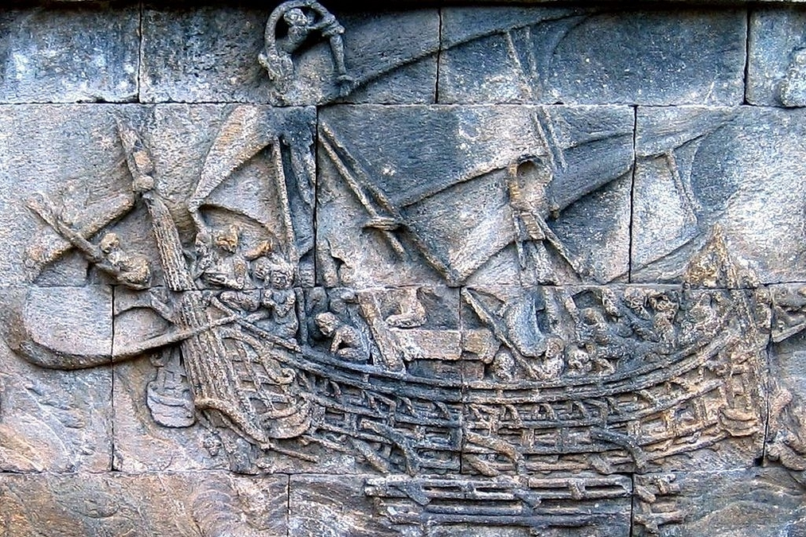
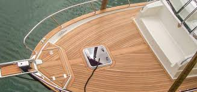
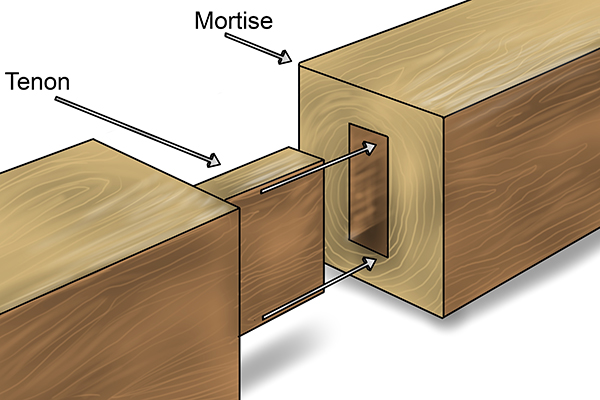

Shipbuilding Techniques in Ancient India: Engineering Mastery of the Seas
Introduction: The Maritime Prowess of Ancient India
India has a long and rich history of shipbuilding, with evidence dating back to the Indus Valley Civilization (~2300 BCE). Indian shipbuilders developed highly advanced techniques that enabled long-distance trade and naval supremacy. Ancient texts such as the Arthashastra (3rd century BCE) and Yuktikalpataru (10th century CE) by King Bhoja provide detailed descriptions of ship design, materials, and navigation techniques.
From the vast dockyard of Lothal to the formidable Chola navy and the maritime power of the Marathas, India's shipbuilding legacy influenced global trade and naval strategies for centuries.
Key Shipbuilding Techniques in Ancient India
1. Use of Teakwood: The Perfect Shipbuilding Material
Ancient Indian ships were primarily built using teakwood, a superior choice due to its:
- High oil content, making it resistant to saltwater damage.
- Natural decay resistance, preventing rot even after years at sea.
- Exceptional durability, allowing ships to withstand storms and long voyages.
Teakwood ships lasted for decades, making Indian vessels some of the sturdiest of their time.
2. Advanced Joinery Techniques: Mortise and Tenon Joints
Instead of using metal nails, which corrode in seawater, Indian shipbuilders employed:
- Mortise and Tenon Joints, where wooden planks were interlocked for extra strength.
- Natural Resin Caulking, using plant-based resins and coconut fibers to waterproof the joints.
- Flexibility in Rough Seas, as the absence of nails prevented structural weakening.
This method ensured ships were strong, leak-proof, and long-lasting.
3. Multi-Decked Ships: Engineering for Cargo and Warfare
Indian shipbuilders designed multi-decked vessels called Navadhanis, which were used for:
- Passenger Transport – Large ships could accommodate travelers on multiple levels.
- Cargo Shipping – Merchant ships transported spices, textiles, and gemstones.
- Naval Warfare – Warships were equipped with defensive structures, archery towers, and ramming prows.
- Animal Transport – Some large ships even carried elephants for military campaigns.
Multi-decked ships enhanced India's naval and commercial dominance.
4. Compartmentalized Hulls: Preventing Shipwrecks
Indian shipbuilders introduced compartmentalized hulls, similar to modern bulkheads, which:
- Contained water-tight sections, preventing total flooding if a hull was breached.
- Improved ship stability, ensuring the vessel remained afloat even after damage.
- Allowed controlled cargo storage, balancing the ship's weight distribution.
This innovation significantly reduced the risk of sinking, making Indian ships safer and more efficient.
5. Iron-Clad Ships: Protection Against Marine Borers
Ancient texts mention iron sheathing on wooden ships to:
- Protect against marine organisms, such as shipworms that weaken hulls.
- Strengthen the structure, making ships more resilient in battle and long voyages.
- Improve durability, ensuring ships lasted longer without repairs.
This early innovation in ship reinforcement foreshadowed modern ship armor.
6. Advanced Navigation Techniques: Celestial & Instrument-Based Sailing
Indian sailors mastered celestial navigation, using:
- Star positions to determine latitude and direction.
- The Sun and Moon to track time and seasonal changes.
- The Sanku (Gnomon), a device used to measure latitude by observing the Sun's shadow.
These techniques allowed Indian sailors to travel vast distances across the Indian Ocean without getting lost.
Role of Ancient Indian Shipbuilding in Global Trade
1. Maritime Trade with Southeast Asia
India had extensive trade networks with Indonesia, Cambodia, Vietnam, and China, exporting:
- Spices such as black pepper and cardamom.
- Fine textiles, including silk and cotton.
- Precious metals and gemstones.
Indian merchants and shipbuilders contributed to the cultural and economic growth of Southeast Asia.
2. Roman and Middle Eastern Connections
Indian-built ships played a crucial role in trade with:
- The Roman Empire, exporting silk, ivory, and spices via the Red Sea.
- The Arabian Peninsula, trading in incense, pearls, and horses.
- East Africa, engaging in commerce through coastal trade routes.
The influence of Indian maritime engineering extended beyond Asia, shaping global trade.
3. Influence on Other Shipbuilding Traditions
Ancient Indian shipbuilding inspired naval architectures worldwide, including:
The Chinese Junk, which shares similarities with Indian ocean-faring vessels.
The Arab Dhow, believed to have adapted Indian hull designs and joinery methods.
European Shipbuilding, where some Indian materials (like teakwood) were later used in colonial-era ship construction.
India's shipbuilding legacy contributed to the development of global maritime technologies.